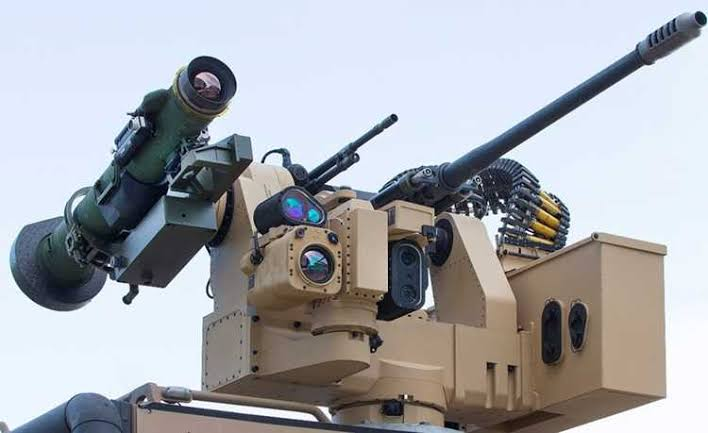

د سپک او دروند سیستم تر منځ یو متوازن انتخاب دی. دا سیستم عموماً په زغرهوالو وسایطو کې کارول کېږي او د مختلفو ماموریتونو لپاره مناسب دی. توانایي: منځنی واټن او ښه دقت لري، هم د دفاع او هم محدود حملوي عملیاتو لپاره کارول کېږي. ځانګړنې: متوازن وزن او ځواک د څو ماموریتونو لپاره مناسب ښه ثبات (stability) پرمختللی کنټرول سیستم